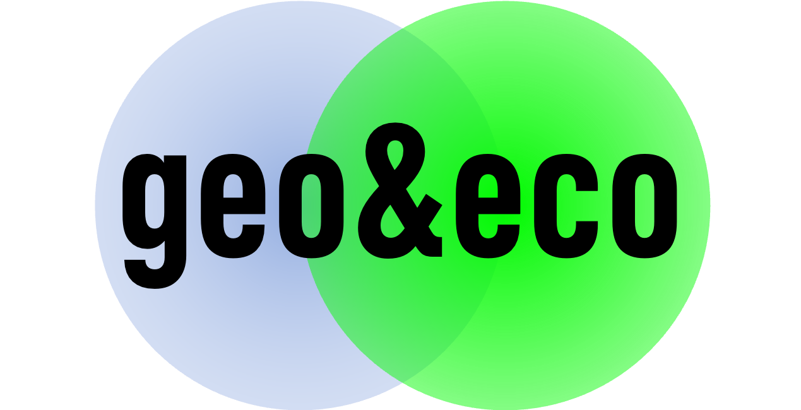
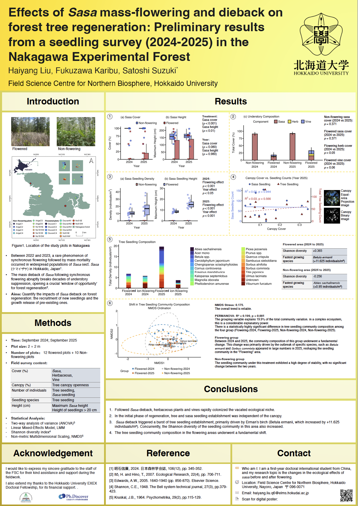

B.S.
2015/09-2019/06
Shanxi University, Taiyuan / School of Environment and Resources / Physical Geography and Resource Environment

B.S.
2015/09-2019/06
Shanxi University, Taiyuan / School of Environment and Resources / Physical Geography and Resource Environment
M.S.
2020/09-2023/06
University of Chinese Academy of Sciences, Beijing, Chengdu / Chengdu Institute of Biology / Biology and Medicine (Landscape Ecology and Restoration Ecology)
RA
2024/07-2025/03
Research Assistant of The Hong Kong Polytechnic University, Shenzhen / Shenzhen Research Institute.
Ph.D.
2025/04-2028/04
Hokkaido University, Sapporo, Nayoro / Graduate School of Environmental Science / Forest Field Science.
Membership
2025/07- present
Effects of Sasa mass-flowering and dieback on forest tree regeneration: Preliminary results from a seedling survey (2024-2025) in the Nakagawa Experimental Forest. Poster presented at the JaLTER Open Science Meeting 2025 (JaLTER-OSM), Nakagawa, Hokkaido, Japan, October 7-8, 2025. poster.

Peer Reviewer:
Done is better than Perfect!
Copyright © Liu Haiyang. All rights reserved.